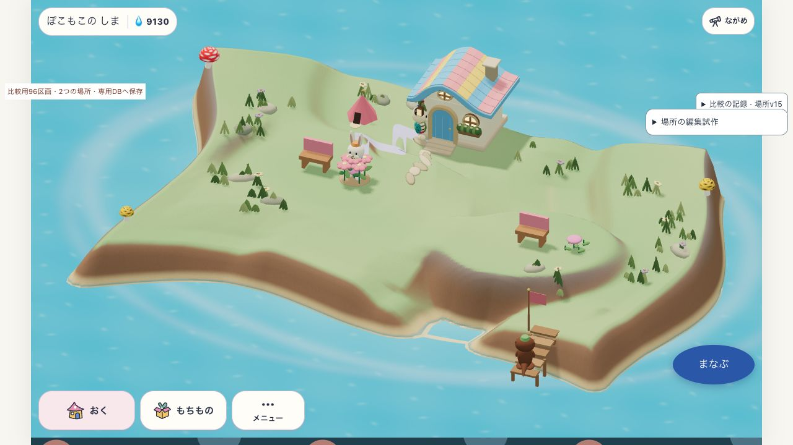
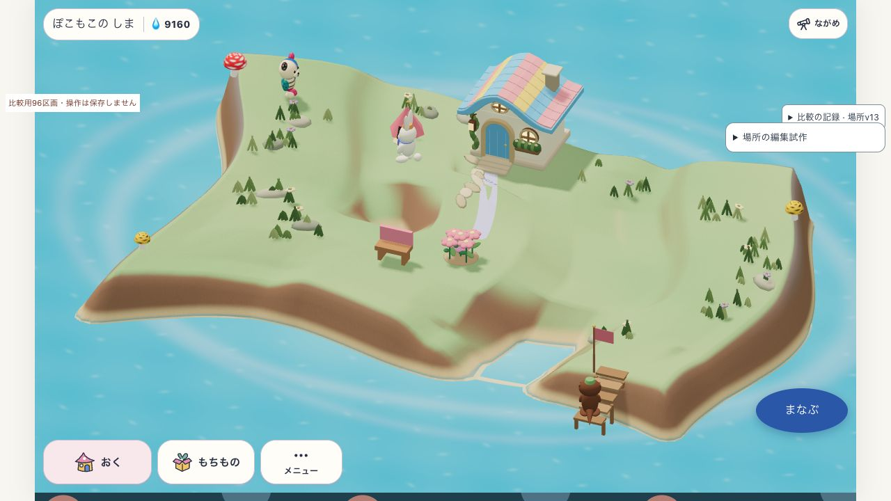
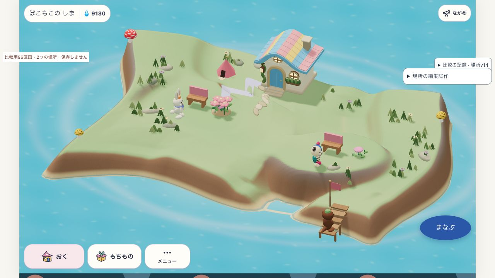
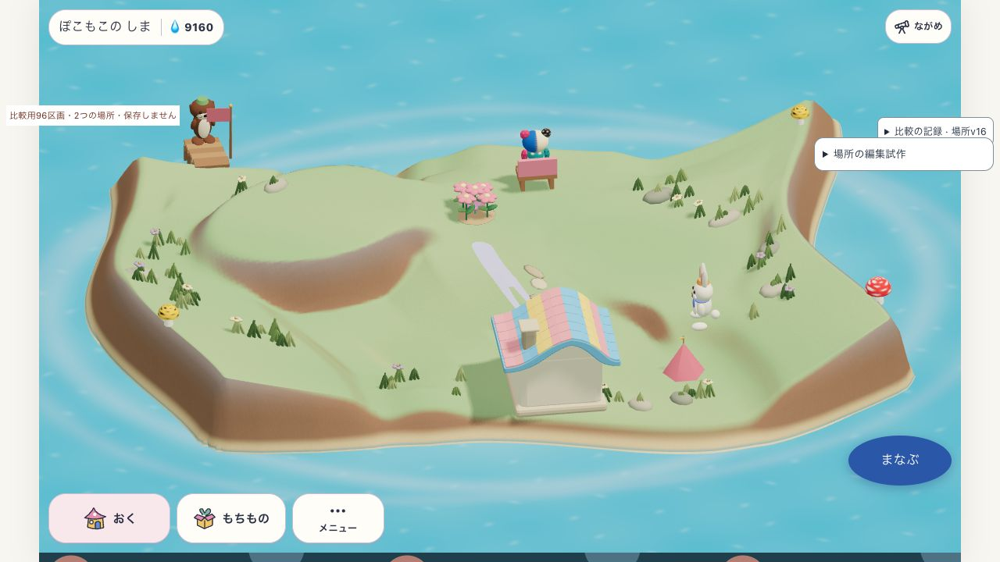
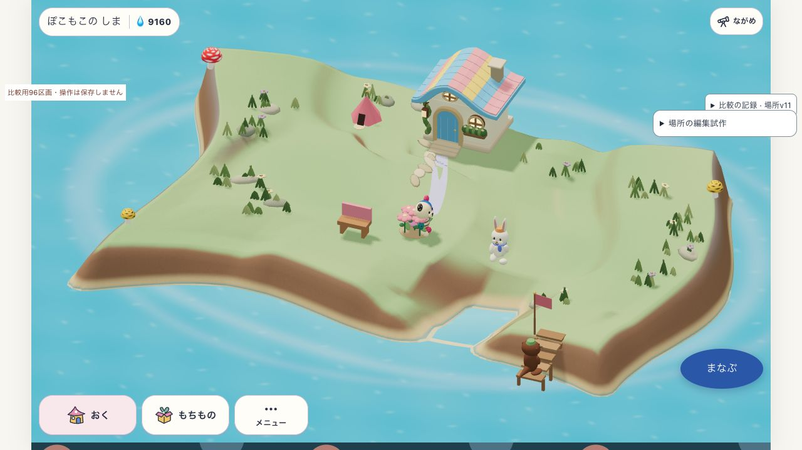
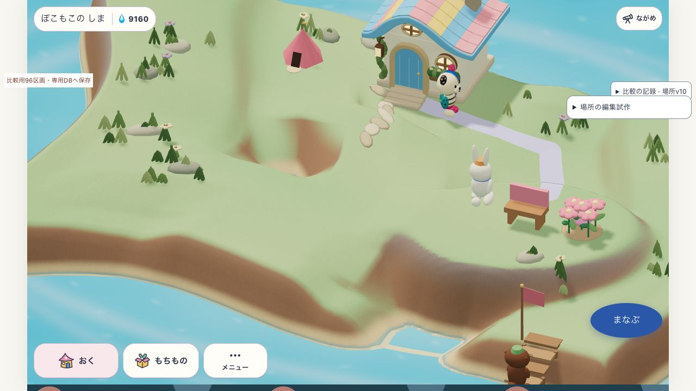

前の3時間枠の記録です。 最新は 二構成の比較と参考の分解 を開いてください。
SANSU · 制作方式の検証 · 2026-10-24
ゲームで使える形と、
目指す美術を分けて確かめる。
同じ土地と所有物を使い、通常操作で場所を作り、住人が使い、保存から再開できるか。さらに、その仕組みで魅力的な島へ育てられるかを検証しています。3時間枠は09:17〜12:17 JST頃。この枠での実装・比較はいったん停止し、結果を保存しています。
全体は未達。約3時間枠を一区切り。v15では、二つの地形と4つの品物を専用DBへ保存し、再読込後も形・履歴・所有物・残高を保持。再開後のやり直し操作と、西の成熟した場所の新しい利用4件も確認しました。湾の曲がり方を分散する追加案は、明確な美術改善が見えず不採用です。成熟した場所二つの同時成立、全島の美術、通常の学習・自然同期への接続は未達です。v17では北肩の二段の帯を解消しましたが、元の比較元に対する美術改善は小さいままです。利用者指定の時間枠でいったん停止しています。
v15：二つの地形と4つの品物を保存し、再開する

西は成熟した花壇とベンチ。東は新しく購入した成長前の花とベンチ。二つの形と4つの品物を保存から再開しました。
西の入口を編集して元に戻した状態で保存し、ページを再読込。二つの形・Undo/Redo履歴・4つの品物・土地・残高9130が一致しました。再開後の「やり直す」でも西の編集が復元され、東の形・所有物・残高を保持しました。保存・再開・やり直しの照合。
再開後、西のベンチと花壇に住人2人の新しい利用を計4件受理しました。東の花は成長0のままなので、成熟した場所二つの同時成立は未達です。通常の学習・自然同期は未接続で、全島の美術と製品版・オフラインでの成立も未達です。再開後の実描画・利用記録。
build: place-outline-v15 / input SHA256: 548cfce5c64652cce7a8b7e1801bd43508186fa1f0605e1a03b9ae1ca3ee1c89 / 二場所専用DB SansuPlaceSetTrialV1 / 試作の対象旅程で成立・配布採用なし
南岸の湾：編集前と奥行の異なる2案
v13では、岸を内側へ削って湾を作る方法を試しました。編集前・奥行0.8・奥行1.2を同じカメラで比較します。土地の所有と元の家具は3画面で一致し、湾の2案は同じ中心(-1,7)・半径2の編集形を使っています。住人の瞬間位置は異なります。

場所v13 / 編集前。クリックすると元の画像を開きます。
手前左の海岸線にくぼみを作れました。独立画像レビューは奥行0.8を湾曲部品として部分採用、1.2は右肩の折れと左の陸の細さが課題と判定。長い崖の壁と広い上面は残り、全島の美術は未達です。新しい湾へ家具を移して住人が使う旅程、保存再開、子どもの理解は未確認です。
build: place-outline-v13 / input SHA256: a592c75581e9fc4fd6e8d1b69de179afb260adec163fd95e819d92d971d895e6 / メモリ内の明示試作・保存なし・配布採用なし
v15：曲がり方を分散する追加案は不採用
奥行0.8の湾を基準に、曲がる部分を周囲へ分散する案を追加比較しました。同じ版・形・土地・所有物で2つの画角を照合。独立画像レビューでは差が小さく、明確な美術改善は認められないため不採用と判定しました。奥行0.8の基準案を維持します。長い崖面と広い上面、船着場脇の四角い水面は残っています。
build: place-outline-v15 / input SHA256: 548cfce5c64652cce7a8b7e1801bd43508186fa1f0605e1a03b9ae1ca3ee1c89 / 住人の瞬間位置は異なる・湾の比較は保存なし
v13時点：二つの地形を同時に保ち、それぞれ編集する
以下はv13時点の記録です。西の低い場所と東の高台を同じ実画面に作成しました。この時点はメモリ内の試作で、保存機能は未接続でした。現在は上のv15の専用DBで保存再開を確認しています。
| 確かめたこと | 判定 | 証拠・限界 |
|---|
| 二つの地形の共存 | 実UIで成立 | 東の高台を保ったまま西の場所を追加。土地・元の所有物も保持。作成時の照合。 |
| 片方だけの編集・Undo/Redo | 対象操作成立 | 西の入口幅を1.2→2へ変更し、元に戻す・やり直す操作を実施。東の形と所有物は変わらない。編集前後と履歴の照合。 |
| 元の家具を二場所へ分ける | 通常移動で成立 | ベンチを西(-1,4)、花壇を東(5,5)へ配置。二つの地形を保持したまま、同じ所有物を移動。配置と実利用の記録。 |
| 住人が新しい場所を使う | 順番に確認 | 西のベンチに新しい利用2件、花壇を東へ移した後に東の花壇へ新しい利用2件を受理。西の利用時は花壇も西にあり、最終状態の成熟場所は1つ。成熟した場所二つの同時成立は未達。 |
| 二場所の保存再開 | 当時は未接続 | v13のこのモードはDBを開く前に保存を拒否。v15の専用DB接続より前の検査です。メモリ内の機能・保護の検査。 |
build: place-outline-v13 / input SHA256: a592c75581e9fc4fd6e8d1b69de179afb260adec163fd95e819d92d971d895e6 / 実UIの確認も製品全体・美術・保存の合格を意味しません。
動作の軽さは未判定です。東に西を追加した1回の計測で、操作処理はCPU時間335.6msでした。GPU描画や画面更新、非同期保存は含みません。また、新しいローカルURLの初回表示でCSS読込エラーを1件記録し、原因は未確定です。CPU計測／初回エラー／変換後ソースの型検査。型検査の成功を快適さ・配布の合格には数えません。
二組の品物を残して、片方の地形だけを変える

場所v14。西は元の成熟した花壇とベンチ。東は通常の購入処理で追加したベンチと、成長前の花。地形も家具も同時に残しています。
追加分の代金30しずくを払い、残高9160→9130。元の品物・学習・成長時計を保持しました。購入後に西の入口を変え、Undo/Redoをしても、東の形・4つの品物・残高は変わりません。購入照合／再編集と履歴。
研究データは家を持つ一方で初回案内中の状態だったため、試作用画面だけで購入可能な品物の非表示を解除しています。価格・足場・購入権の検査は本体の処理を使います。東の花は成長0で、成熟した場所の新規利用記録の対象にはなりません。自然な成長や製品の初回案内の合格とは分けます。
参考画像との独立比較では、東の高台が「丘」より「丸い台」に見える点が課題。次に変える候補は、高台の平面と高さを保ちながら周囲へつなぐ肩の幅です。物を追加するだけで全景の造形が改善したとは判定しません。
build: place-outline-v14 / input SHA256: 7ae7490d80c11b454c27d486ec7726f15dd9156832ecc66b2896a6f82e5e7380 / この画像は保存なしの比較
編集時の待ちも残っています。固定したv14の追加診断では、経路の計算に加え、地面全体の複製・三角形の編成・接地点を探す索引づくりが主要な処理でした。区間ごとの診断。Nodeでの診断値を実機の快適さへ読み替えていません。
高台の北の肩：二段に見える原因を直した3案比較
v16は西の低台と東の高台を同時に保ち、東高台の北の肩だけを広げました。同じ2形状・土地・元の家具2点・材質・3画角で比較しています。住人の瞬間位置は異なります。下は差が見える裏側からの画角です。

場所v16 / 比較元 / 裏から。
v16の幅拡張だけの案は採用保留。独立画像レビューは、裏の大きい茶色の壁が薄くなり、周囲につながる緑の面が増えた点を改善と判定。一方、その下に細い茶色の帯が現れ「二段の棚」に見えます。全景と横では丸い上面と南の壁が残り、「丘へ馴染んだ」とはいえません。幅を増やすだけで解決せず、現在の範囲で断面と材質の寄与を切り分ける必要があります。
通常UIで2形状を作成し、東をUndo/Redoして復元。11照合が一致。住人が予定地にいる間は編集を拒否し、通常の花壇利用で離れた後に受理しました。平面・入口と既存90目的地への到達性を守る数値検査は通っていますが、美術の合格とは別です。
v17は二段の帯を解消する断面候補として採用。幅の増やし方によって急斜面が2回現れる原因を、実際の地面と描画用法線で確認しました。同じ保護範囲・外縁のまま断面のつなぎ方を変えると、5本の断面の二つ目のピークと、裏側の細い茶色の帯が消えました。独立レビューもv16拡張案に対する局所改善を確認。一方、元の比較元に対する差は小さく、自然な丘や全島の美術の達成とは判定していません。
v17も通常UIの2回Undo→2回Redo、3画角、土地・所有物・形の11照合が成立。試作sourceだけを変更し、肩の保存・製品採用はしていません。v17の実UI照合／断面と描画法線／既存条件・歩行・保護の検査／型検査。
断面候補 build: place-outline-v17 / input SHA256: e4ddab03761987548678e3754d77ba7b127891b48be255edf0a67d9d6052b895
build: place-outline-v16 / input SHA256: 4fdf7e38628695138025a6e4b4d95d02b0db9cb1d48009bddfe067e0d93b82d9 / 肩比較はメモリ内限定・保存非対応
海岸：同じ条件の4案
同じ西岸、同じ形・所有物・材質・カメラ。住人の瞬間位置は異なります。地形は操作で生成し、描画と歩行が同じ三角形を使います。

場所v11 / 裾なし。クリックすると元の画像を開きます。
全4案とも、美術の目標には未達。裾を広げても長い外壁が残り、左の岸は横から削った形に見えます。使える平面を守るため、中央の実効幅はどちらも約0.50。輪郭から崖を作るv12は草・崖・水の境界が明瞭になりましたが、既存岸との両端が角のある切り込みに見えます。手前と右の長い壁、広い上面の区切り不足も残るため、独立画像レビューも「要再設計」と判定しました。
東側のv12は船着場の足場を壊すため、通常UIで拒否。形・履歴・家具は保持されました。この課題を受け、上のv13では南岸の平面輪郭を変える湾を試しています。縦の断面と島全体の構成を含め、全景の改善は引き続き検証中です。
build: place-outline-v11 / input SHA256: 3d43824a976ff15954ad0a7aca379b2871315967740b182727fd494784f1da25 / 明示試作・保存なし・配布採用なし
輪郭案: place-outline-v12 / input SHA256: 09dd47af755b5b65bc8c780ca3beb5f04bbd9f9eccadfb5344fd7ab6044b8871 / 同じ形・家具・材質・カメラを照合
単一の高台をゲーム中に作り、使い、保存する

場所v10。高台の平面と西向きの坂を指定し、元のベンチと花壇を通常UIで移動。連続材質で表示。
| 確かめたこと | 判定 | 証拠・限界 |
|---|
| 坂の向き | 限定成立 | 同じ高さ0.9で北は長さ不足、西は既存陸へ接続。Undo/Redoで方向を復元。 |
| 通常配置・住人利用 | 対象旅程成立 | ベンチ(5,5)、花壇(6,5)へ通常移動。配置後に住人2人の新しい利用を受理。実描画の利用記録。 |
| 実writer・保存再開 | 専用DBで成立 | 単一場所の旧v2→v3で形と所有を保持。再読込で方向・履歴・家具一致。v10復元照合／キャッシュ修正後のv11再開。二場所・湾の保存は含まず、通常学習・自然同期は停止中。 |
| 再計算しても同じ床 | 欠陥を修正 | 旧坂の計算が残る欠陥を独立監査で再現。v11で再計算時に破棄。3条件の26,357頂点と96地点への経路が一致。修正後／修正を外した比較。 |
| 全島の美術・自由編集 | 未達 | 長い外壁・既存地形との継ぎ目・場所の区切りが課題。二場所の共存・個別編集・専用DBでの保存再開はv15までに確認。成熟した場所二つの同時成立、全島の美術、通常の学習・自然同期への接続は残っています。 |
残った課題と次の一手
編集時の待ちは残っています。v17の入口変更1回は、同期処理338.9msと描画側の再構築62.5msでした。GPUや保存待ちは含まず、過去版との速度向上率は主張しません。実UIのCPU観測。
新しい花の成長についても、古い試作時計を今の時刻につなぐと即開花することが判明しました。時計起点を明示した実domainの診断では、経過時間で二つの成熟場所になりましたが、ブラウザで自然に育てて住人が使った証拠ではありません。時計入力の診断。
- 同じ島で全景を作る。現在は別モードの湾と二高台を、同じ共有床・所有・通常編集で組み合わせ、長い壁と広い空面を解く。南湾と西低台の外肩には重なりがあるため、支持面・入口を守る合成条件を先に検査する。
- 自然成長を安全につなぐ。専用の同期保存入口と、描画・同期workerで共通の地形設定を作り、通常購入から成長・新しい実利用・保存再開まで検証する。
- 編集の待ちを減らす。全床の再構築を分けて計測し、再計算しても床と経路が一致する条件を守って部分更新を試す。
これらは次回再開時の候補です。今回の時間枠を延長せず、全島の美術・自由編集・成長は未達として残します。
島研究・関連実装はmainへのcommit/pushから除外したままです。それ以外の確定変更はmainの68ab8a60までpush済みです。